根據衛福部食藥署統計，國人每年平均食用59.92公斤的海鮮，包含28.35公斤的魚、12.2公斤的貝類、19.37公斤的頭足類。
(資料來源：衛福部食藥署，2019 年食物細項攝食量計算結果)


根據衛福部食藥署統計，國人每年平均食用59.92公斤的海鮮，包含28.35公斤的魚、12.2公斤的貝類、19.37公斤的頭足類。


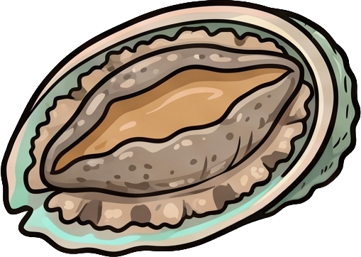

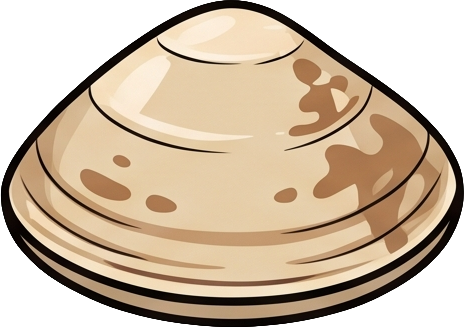
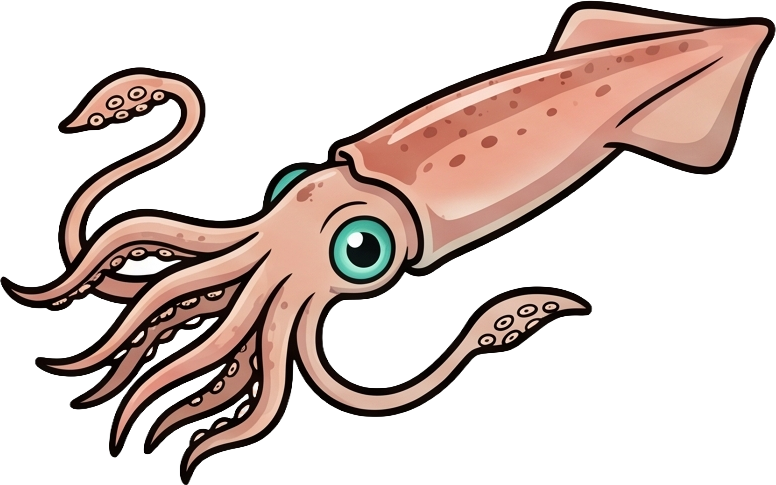
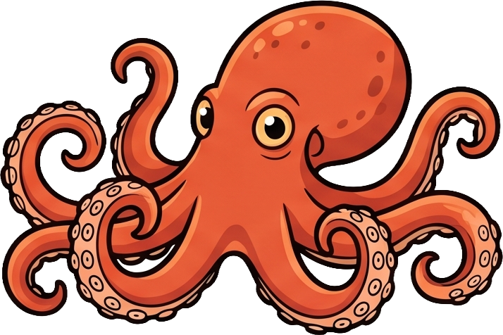


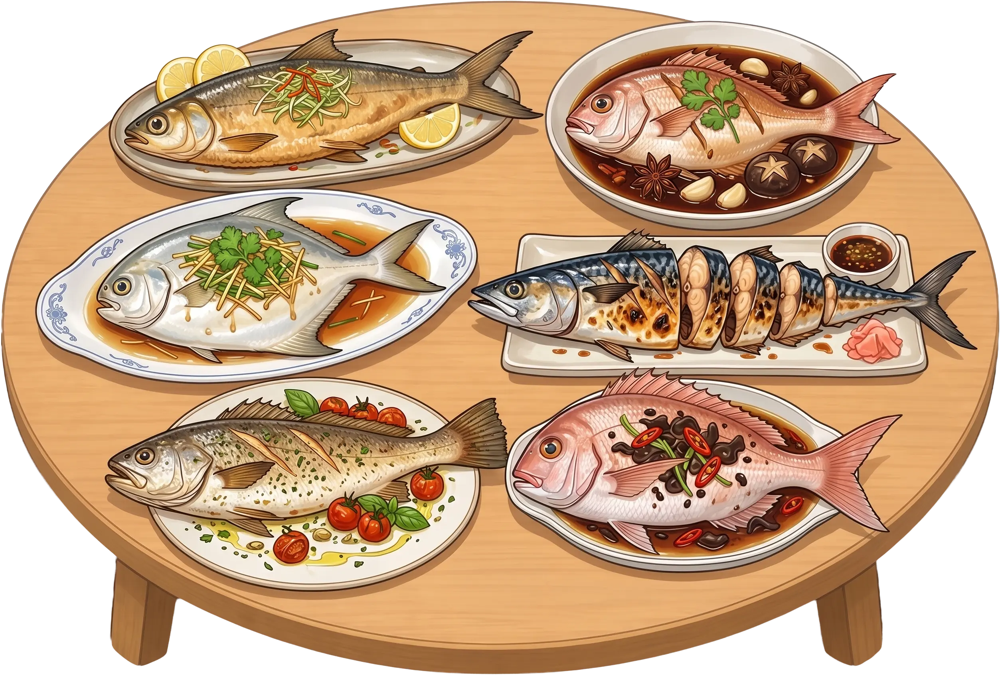
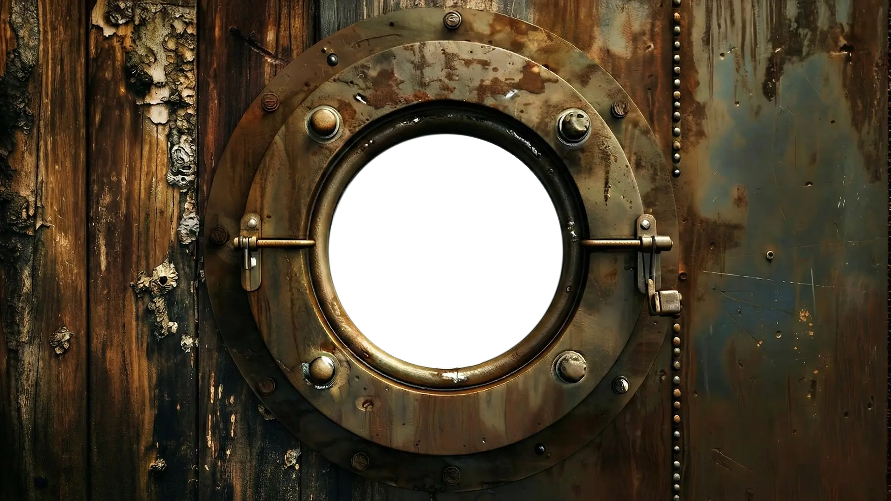

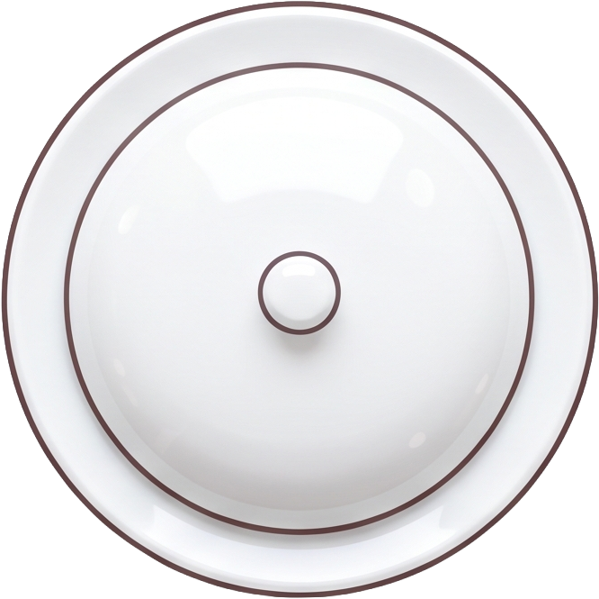
而與遠洋漁業相關的產業鏈，從加工與水產貿易到船員就業、餌料供應，乃至於造船與航儀五金、維修整補，周邊的產業經濟更是高達千億。
與大海拚搏的同時，台灣早期還有一個更響噹噹的稱號──世界第一拆船王國，這個王國的興起與二戰有著緊密連結。


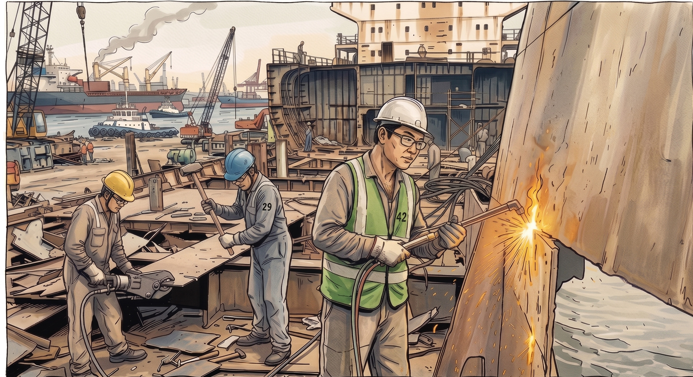
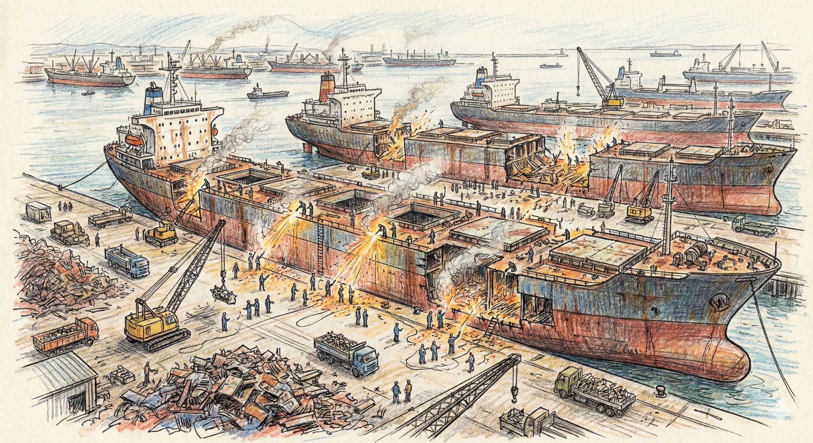


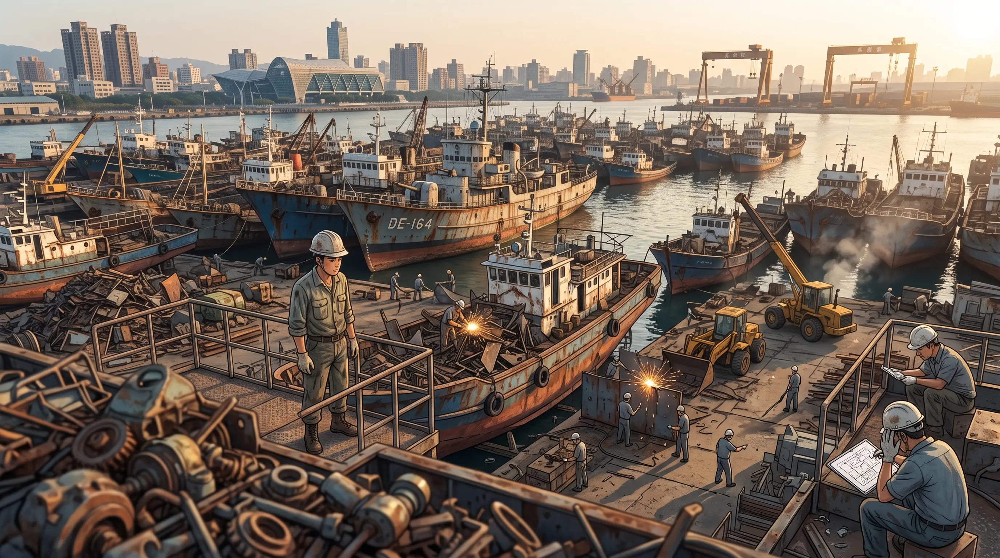
當年住在大仁宮拆船專區旁的洪世春，回憶起小時候：「那時候會有人來問，弟弟，你們這邊聽說有航空母艦？我們這裡當時連美國的航空母艦都有拆過，每一天就是聽到碰！碰！碰！廢鐵砸在地上的聲音。」
直到1986年8月11日接近中午，大仁宮碼頭正在進行加那利號油輪的拆解時，傳出震耳的爆炸聲響，「我中午十二點休息，一聽到聲音馬上跑回來把小孩帶走……」目擊居民回憶起那慘烈的一幕：「它是整個船首到船的駕駛艙，前面全部的甲板掀掉以後，它駕駛艙裡面好像還有兩個是氫氣沒有爆……」這場爆炸帶走了16條人命，震碎了住家玻璃，鐵片飛到遠處插入民宅，也為這個產業插下了招魂幡。
1980年代大仁宮爆炸案目擊居民說法

但在大仁宮事件之後，台灣沒有新的拆船專區，這80艘老船，一部分到了旗津的拆船廠進行拆解，卻拆出地方居民的恐懼與憤怒。「(拆船廠)離我們很近，它拆船這樣敲、震動，房子是不是都跟著震動」，居民拉開自家窗戶，向外看去就是拆船廠，緊鄰著拆船廠，要面對的不僅只是噪音跟震動，「甚至有的地方裂到都會滲水，連地板也裂得很嚴重，我們怕我們的人身在裡面有危險的問題。」


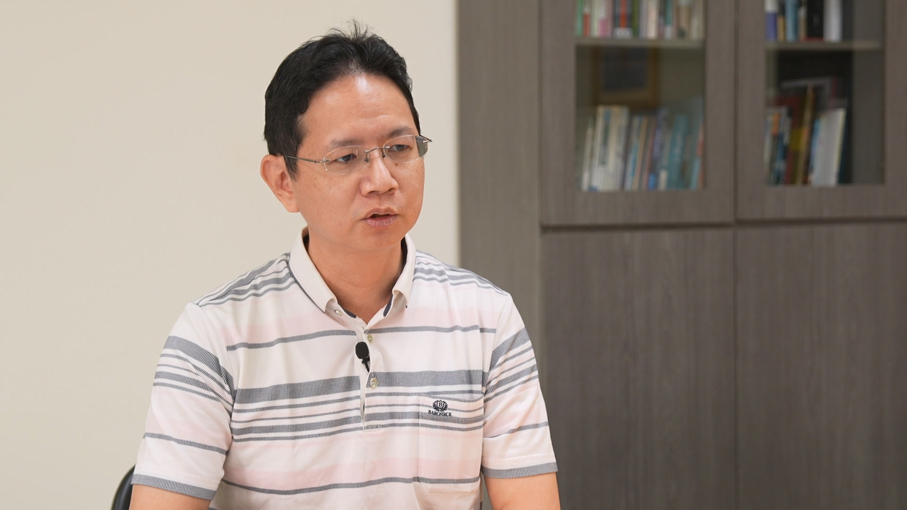


文字撰稿：劉瑋婷
視覺設計：魏國慶、林修逸
網頁製作：魏國慶